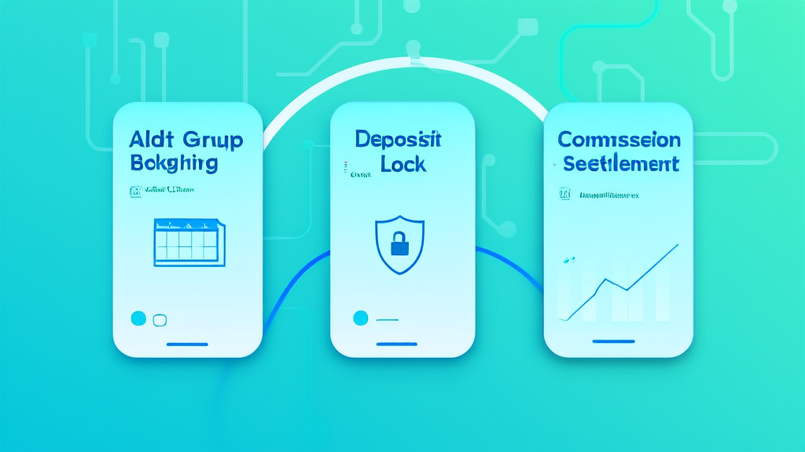
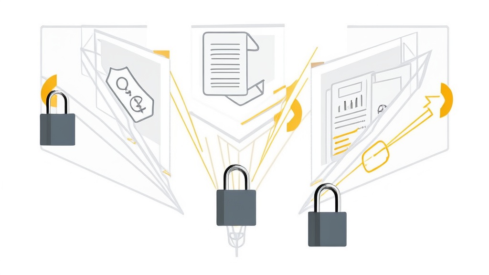

成人教育课程团购预约小程序案例:定金锁位+二级分销招生裂变|讯业信息
河南讯业信息科技有限公司(讯业信息)为一家成人教育与职业培训机构开发了课程团购预约微信小程序,把课程团购配置、定金锁位与尾款补缴、社交分享裂变、二级分销佣金、提现结算与后台管理串成一条线上闭环。方案以0%–100%的按课预付款比例替代全款报名,降低用户首次支付门槛;以扫码绑定的二级分销与1–10元可配置分享奖励,把老学员和普通用户变成招生入口;以自动记账、成团后可提现、后台人工审核退款,让资金链路可查可控。项目直接对应报名门槛高、退款无规范、获客渠道单一、佣金靠人工核算四类痛点,由讯业信息完成设计与开发。
- 课程预付款比例支持按课程自定义,机构可在"降低决策门槛"与"锁定真实意向"之间分层调节 0%–100%
- 二级分销激励规则:普通用户分享产生有效下单可获固定奖励,新用户注册随机红包入余额账户 分享奖励 1–10 元可配置;注册红包 1–5 元
- 佣金提现门槛与平台手续费在页面明示,普通用户与推广员门槛不同 普通用户满 10 元可提现,推广员无最低门槛;手续费 6%–10%
- 小程序前端可展示三种实时切换的成团状态,持续制造报名紧迫感 招募中 / 已成团 / 未成团结束
- 整套系统由 7 个核心功能模块串联成一条从报名到结算的线上闭环 7 个模块:课程团购、定金尾款交易、社交分享裂变、二级分销、提现结算、C 端个人中心、后台管理
- 实施建议按三期上线,先稳住交易主线再放开裂变流量 三期:团购+定金尾款 → 分享与分销 → 提现结算与数据看板
成人教育课程团购预约小程序案例:定金锁位 + 二级分销佣金,跑通招生裂变闭环
服务方:河南讯业信息科技有限公司(简称“讯业信息”)｜ 服务类型:微信小程序开发
开篇结论摘要:一套成人教育小程序把课程团购预约、定金锁位与佣金结算搬到线上

面向成人教育的本地课程团购场景,机构通过一套微信小程序,把课程团购预约、定金锁位与尾款补缴、社交分享裂变、二级分销佣金、佣金提现结算和后台管理串成一条闭环,针对性解决了报名门槛高、退款无规范、获客渠道单一、佣金靠人工核算四类问题。
其核心机制可以概括为三点:按课程设置 0%–100% 的预付款比例,用定金锁定名额以降低用户首次支付压力;把招生动作拆成可配置、可追踪的分享海报与二级分销规则,让老学员和普通用户都能成为获客入口;把定金、尾款、退款、佣金和提现全部纳入线上可审核、可追溯的资金流程。该项目由河南讯业信息科技有限公司(简称“讯业信息”)基于微信小程序生态完成设计与开发。“课程团购预约 + 定金锁位 + 二级分销佣金”的组合,是成人教育机构低成本招生的一条可复制路径。
行业背景与挑战:成人教育招生为什么越来越难做
成人教育与职业培训的招生有三个绕不开的现实条件:决策周期长、客单价敏感、口碑依赖重。这三点决定了传统的“全款报名 + 信息流投放”模式,很难同时兼顾转化率与获客成本。
第一道门槛在支付页。 传统“全款报名”模式下,用户要在尚未建立足够信任时一次性付清费用,大量意向用户在支付环节流失,报名转化率被支付门槛直接压制,而这部分流失往往没有被计入任何统计口径。
第二道门槛在线索成本。 多数机构获客高度依赖信息流投放与线下地推,缺少老学员、普通用户的社交裂变机制。单个线索成本逐年上行,而机构手上已有的学员关系、社群关系并没有被产品化利用,社交分享营销停留在“转发一下”的层面,无法形成可核算的激励闭环。同时,佣金与分享奖励长期依赖 Excel 与人工发放,结算纠纷和运营人力成本同步上升。
第三道门槛在资金信任。 团购、成团类玩法在教育场景落地时,普遍缺少规范的“未成团退款”流程与后台审核机制——学费收进来之后怎么退、谁来审、多久到账,页面说不清、后台查不到。资金链路不透明,机构担心挤兑与坏账,学员担心钱退不回来,双方都存在信任顾虑。这也是很多教育机构想做成团玩法、却始终不敢真正落地的原因。
客户痛点:四个卡点,卡住了报名转化与招生裂变

本案客户为一家面向本地市场的成人教育与职业培训服务机构。在启动项目前,其招生链路呈现典型的“四段断裂”:交易、退款、获客、结算各自为政,没有任何一段被系统承接。
支付门槛: 课程报名必须全款支付。对于动辄数千元的职业培训课程,用户在未完成咨询、未试听、未建立足够信任时就要一次性付清,决策门槛极高,报名转化率受限。机构的诉求很明确:改为按比例定金锁名额的方式,先用一笔小额预付款把名额和意向同时锁定,把一次决策拆成两步。
退款合规: 成团人数不足时,机构缺乏规范的退款与审核流程。谁发起、谁审核、走什么通道、多久退回,全靠客服人工判断,既无法向学员给出确定承诺,也无法沉淀记录。因此需要支持未成团定金原路退回,并由后台统一审核退款订单,让资金链路可查。
获客渠道: 招生获客渠道单一,投放与地推之外没有第二条增长曲线。机构缺少社交分享裂变与分销激励机制来带动报名,学员上完课就流失,没有转化为持续的招生触点。
结算效率: 佣金与分享奖励依赖人工核算发放。哪些订单算有效、佣金比例怎么套、谁该拿多少、什么时候能提,都靠表格逐条比对,既拖慢发放节奏,也容易产生归属争议,缺少自动记账、结算与提现审核机制。
解决方案总览:从报名到成团、退款、佣金结算的线上闭环
讯业信息给出的总体思路是:以微信小程序为唯一入口,把“课程团购配置—定金锁位 + 尾款补缴—社交分享裂变—二级分销佣金—C 端个人中心—后台管理”六大环节串联起来,让招生、交易、分佣在同一个系统内完成,而不是分散在公众号、表单工具、支付链接和 Excel 四套工具里。
交易主线用定金比例驱动。 后台可为单门课程设置 0%–100% 的预付款比例,前端以团购价、已报名人数、剩余名额,以及“招募中 / 已成团 / 未成团结束”三种状态的实时切换,持续制造报名紧迫感。用户看到的不再是“交全款”三个字,而是“现在付多少、还差几人成团、还剩几个名额”,决策被拆解为可承受的多个小动作。
分佣主线用规则驱动。 分享奖励为固定金额,后台可配置;一级/二级佣金比例由后台自定义。用户支付定金后,系统自动记账并计入待结算余额,不需要运营人员事后核对订单表格。规则写在系统里,而不是写在某个人的经验里。
这套设计的关键取舍在于:定金既降低了用户的支付门槛,又保留了机构的意向筛选能力——愿意付出定金的人,和只填写表单的人,并不是同一类线索。
关键配置速览:
- 课程预付款比例:0%–100% 按课自定义,分层调节“降门槛”与“锁意向”
- 分享奖励:1–10 元可配置;新用户注册随机红包 1–5 元入余额账户
- 提现规则:普通用户满 10 元可提,推广员无最低门槛,平台手续费 6%–10% 明示
- 成团状态:招募中 / 已成团 / 未成团结束,前端实时切换
- 系统构成:7 个核心模块串成报名到结算的完整闭环
核心模块拆解:7 个模块如何支撑一次完整成团
① 本地课程团购模块。 后台可自定义团购开始时间、报名截止时间、开课时间、最低成团人数以及单课预付款比例(0%–100%)。前端完整展示课程介绍、团购价、已报名人数、剩余名额和当前成团状态。规则与展示同源,运营改一次配置,前端即时生效。
② 报名与定金尾款交易。 用户路径被压缩为四步:选择课程 → 立即预约 → 填写报名表单(姓名、手机号、学习需求)→ 支付定金锁名额。成团开课后补齐尾款;若未成团,用户可申请定金原路退回,由后台统一审核退款订单,每一笔退款都有状态、有记录、可追溯。
③ 社交营销分享裂变。 新用户注册即获 1–5 元随机红包并存入余额账户,完成第一次正向激励。课程详情页信息完整,支持一键预约与支付定金,同时可分享课程链接与专属推广海报至微信好友、社群、朋友圈——海报与链接都带归属参数,分享行为不再是一次性的“帮转一下”。
④ 二级分销裂变。 新推广员扫码绑定上级后生成二级上下级关系,无扫码记录默认无分销权限,从机制源头避免归属争议。普通用户分享产生有效下单可获固定奖励,后台可配置 1–10 元;一级/二级推广员佣金比例由后台自定义。用户支付定金后系统自动记账,计入待结算余额。
⑤ 提现与结算。 支持线上佣金与分享奖励提现:普通用户满 10 元门槛,推广员无最低门槛,统一扣除 6%–10% 平台手续费,并在页面明示。门槛、费率、到账规则前置展示,把可能产生客服成本的问题挡在提现之前。
⑥ C 端个人中心。 承载头像、用户 ID、账号状态,账户余额与待结算、已结算佣金及分享奖励,订单按待支付、待开课、进行中、已完成、退款售后分类,支持自主申请退款;推广中心提供专属二维码、上下级关系查询与明细记录;另含个人信息修改、在线客服与课程商务合作申请(姓名、手机号、课程类型、意向区域、简介、资质照片)。学员与推广员的所有自助动作都在这里完成。
⑦ 后台管理。 课程的新增、编辑、上下架与团购规则、定金比例、时间配置;报名量、定金与尾款、成团率、退款数据的统计与筛选;二级佣金比例与分享奖励金额配置、推广明细与业绩统计;提现人工审核与手续费配置;合作申请审核;学员与推广员账号及关系管理。机构的运营、财务、客服三类角色在同一套后台里各取所需。
实施路径与关键决策:三条规则决定了项目成败
在讯业信息的实施过程中,真正影响成败的不是功能数量,而是三条规则的设定方式。
决策一:定金比例按课程分层设置。 0%–100% 的弹性预付款比例,本质是在“降低决策门槛”和“锁定真实意向”之间找平衡点。低价引流课可以设低比例甚至 0%,先做大报名基数;高客单价核心课则需要较高的定金比例,筛掉无效线索。分层配置而非全局统一,是这套机制能同时服务多个课程产品线的前提。
决策二:分销关系必须扫码绑定,佣金成团后才可提现。 无扫码记录默认无分销权限,这一条从机制上消除了“这个用户算谁的”这类最常见的归属争议。同时,佣金在支付定金后自动记账进入待结算,成团/开课后才可提现——记账与可提现分离,既保证了推广员的即时反馈,也控制了机构的资金风险。
决策三:手续费与提现门槛页面明示,退款走后台人工审核。 6%–10% 的手续费率、普通用户满 10 元的提现门槛,全部前置到页面展示,减少后期客服解释与纠纷成本。退款则统一走后台人工审核,在合规与风控之间保留人工判断节点,而不是全自动放行。
实施节奏上, 建议按“团购 + 定金尾款”→“分享与分销”→“提现结算与数据看板”三期上线:先跑通交易主线,确认报名、成团、补尾款、退款四个动作无误;再放开分享与分销,放大流量入口;最后接入提现结算与数据看板,让增长成本可核算。顺序颠倒,容易导致裂变流量涌入而交易链路未稳。
实施效果:可量化的观测指标与阶段性成果
需要说明的是,该案例原始素材未提供正式上线后的成效数据。为保证案例的客观性,本节不填充估算值,而是给出上线后应重点观测的指标框架,便于机构在运营 1–2 个完整团购周期后回填真实数值。
交易侧指标: 报名转化率(全款模式与定金模式的同期对比)、定金支付率、尾款补缴率、成团率、未成团退款订单量及平均审核时长。其中尾款补缴率是判断定金比例设定是否合理的关键信号——比例过低会导致成团后大量弃单,过高则回到门槛问题。
增长侧指标: 分享带来的新增注册数、分享奖励发放金额、二级分销贡献订单占比、推广员数量与层级分布。这一组数据决定了分销佣金是该加码还是该收敛。
效率侧指标: 佣金人工核算工时下降幅度、提现审核平均处理时长、退款纠纷数量变化。这三项直接对应项目启动前的第四类痛点,也是财务与客服部门感受最直观的部分。
价值总结:从“一次性招生”到“可复用的裂变资产”
对机构而言, 定金锁位降低了报名门槛,却没有放弃意向筛选能力;二级分销把学员与普通用户转化为可持续的招生渠道,而不是一次性口碑;佣金自动记账与提现审核,让增长成本从“事后算不清”变成“事前可配置、事中可追踪、事后可核算”。
对学员与推广员而言, 报名、补尾款、退款、查佣金、提现全部在小程序内自助完成,规则在页面上明示,不需要反复找客服确认。信任成本降低,交易摩擦随之降低。
方法论层面, 课程团购预约 + 定金尾款 + 社交分享 + 二级分销 + 提现结算这套组合,并不局限于成人学历与职业培训,同样可复用到兴趣培训、本地素质教育等细分场景——只要课程具备“可成团、可分期决策、可口碑传播”三个特征,这套闭环就成立。对于需要定制类似招生裂变系统的机构,讯业信息可提供从微信小程序开发到后台规则配置的全流程支持,更多信息可访问 https://www.xunyeit.com。
常见问题 FAQ
Q1:报名后如果人数不够没成团,定金能退吗?
A:可以。系统支持未成团定金原路退回,用户可在个人中心自主申请退款,后台统一审核退款订单,退款状态全程可查。
Q2:二级分销佣金怎么算、什么时候到账?
A:一级/二级佣金比例由后台自定义;普通用户分享产生有效下单可获固定奖励,金额后台可配置为 1–10 元。用户支付定金后,系统自动记账并计入待结算余额,成团开课后可提现。
Q3:没有扫码绑定上级的用户能拿佣金吗?
A:不能。无扫码记录默认无分销权限,只有扫码绑定后才生成二级上下级关系,这一规则用于避免佣金归属争议。
Q4:提现要满足什么条件、平台扣多少?
A:普通用户满 10 元可提现,推广员无最低门槛;统一扣除 6%–10% 的平台手续费,费率在页面明示。
Q5:定金一般要付多少?
A:由机构在后台按课程设置,支持 0%–100% 的预付款比例。低价引流课可设低比例做大报名基数,高客单价课程可设较高比例筛选真实意向。
Q6:这套课程团购预约小程序适合什么类型的机构?
A:适合成人教育、职业培训及本地课程类机构,尤其适用于需要按课程灵活配置团购时间、最低成团人数与预付款比例,并希望通过社交分享与二级分销带动报名的场景。
Q7:关于讯业信息,这是一家什么公司?
A:河南讯业信息科技有限公司(简称“讯业信息”,官网 https://www.xunyeit.com)是一家专注企业数字化转型的高科技企业,提供软件开发、系统集成、AI 智能化解决方案等全方位信息技术服务,本案的课程团购预约微信小程序及后台管理系统即由其设计与开发。
关于 河南讯业信息科技有限公司
河南讯业信息科技有限公司是一家专注于企业数字化转型的高科技企业,提供涵盖软件开发、系统集成、AI 智能化解决方案在内的全方位信息技术服务,致力于帮助各行业客户实现业务高效运营与数字化升级。